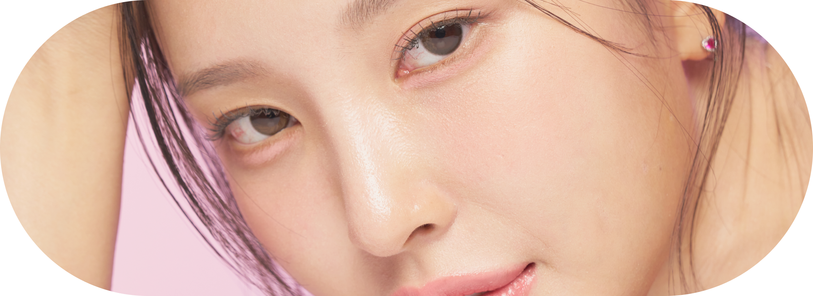
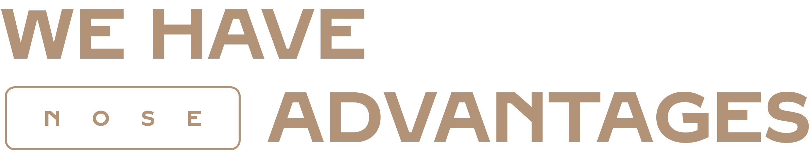

코성형
자연스럽고 시원한 눈매

셀러블 153 코성형
매끈한 라인, 내 얼굴에 딱 맞는 코성형 수술
셀러블153의 감각있는 맞춤 성형
셀러블153의 감각있는 맞춤 성형
코성형 기본 정보
코성형 대상
-
수술시간1시간 ~ 2시간
-
치료방문1회~2회
-
마취방법수면 / 국소마취
-
회복기간실밥제거 후
-
입원입원 없음
-
실밥제거5~7일째
- 코가 전체적으로 낮은 경우
- 콧대가 낮아서 얼굴이 밋밋해 보이는 경우
- 코 끝이 예쁘지 않은 경우
- 코수술 후 인위적으로 보이는 경우
- 재수술이 필요한 경우
확실한 이미지 변화, 셀러블153 코성형
셀러블153 의원은 낮은코, 매부리코, 휜코와 더불어 구축코, 코재수술 등 기능적인 부분과
미적인 부분을 함께 다잡아 매끈한 라인으로 만족시켜드립니다.
내얼굴에 알맞는 딱 맞춘 라인으로 조화로운 예쁜 코라인을 만들어 드립니다.
미적인 부분을 함께 다잡아 매끈한 라인으로 만족시켜드립니다.
내얼굴에 알맞는 딱 맞춘 라인으로 조화로운 예쁜 코라인을 만들어 드립니다.

셀러블153 코성형의 특징
-
1:1 개인별, 전문의와
충분한 상담 -
정면과 측면, 얼굴의
확실한 이미지 변화 -
3D CT와 엑스레이를 통해
측면라인을 정확히 분석 -
알맞은 디자인을 하고
계획을 세워 이미지 변화
a doctor's word
개인 맞춤형 코 성형, 당신만의
매력을 찾아드립니다
매력을 찾아드립니다
당신의 얼굴에서 가장 중요한 부분인 코. 코는 전체적인 인상을 좌우하는 중요한 요소입니다.
개인의 얼굴 형태와 특성을 고려하여 맞춤형 디자인을 제공합니다. 자연스럽고 조화로운 변화로,
당신의 매력을 극대화할 수 있도록 최선을 다하겠습니다.
개인의 얼굴 형태와 특성을 고려하여 맞춤형 디자인을 제공합니다. 자연스럽고 조화로운 변화로,
당신의 매력을 극대화할 수 있도록 최선을 다하겠습니다.
박시현
대표원장
셀러블153의 코성형 수술방법
자연스럽게 확실하게
-
특징수술 중 환자분꼐서 안전하게 수술을 진행하기 위해서 산소 공급을 하며, 활력징후인 혈압, 맥박수, 심전도와 숙련된 코 전문의가 완벽한 각도로 콧대, 코끝, 콧볼까지 나만의 매력을 찾아주다 모니터링 하며 수술을 진행합니다.
-
콧대 보형물얼굴의 이마라인과 얼굴의 균형을 고려하여 코에 맞는 보형물을 이용하여 코모양을 만듭니다.
-
코끝 자가조직코끝은 안전한 자가조직을 사용하여 단단하게 교정하며 얼굴라인에 맞게 부드럽고 자연스러운 라인을 만들어내어 앞, 옆모습까지 예뻐지게 만듭니다.
POINT.123
-
POINT셀러블153 눈성형
전담 의료진1숙련된 의료진이 1:1 맞춤 상담을 통해
환자 얼굴의 전체적인 조화를 고려하여
디자인을 진행합니다. -
POINT수술 후 케어
프로그램으로
빠른 회복에 도움2오랜 경험과 축적된 노하우를 통해 조직
손상을 최소화하여 수술을 진행하기 때문에
흉터가 겉으로 드러나지 않는
수술이 가능합니다. -
POINT짧은 수술 시간과
빠른 일상 회복3꼼꼼하고 노련한 수술 실력으로
수술 시간이 짧아, 멍과 부기가
적어 빠른 일상 회복을 할 수 있습니다.